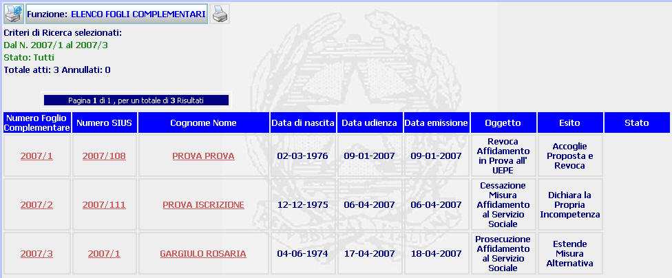

ELENCO FOGLI COMPLEMENTARI: La funzione consente di visualizzare l'elenco dei fogli complementari individuati dal sistema in seguito ad una ricerca procedimenti per estremi foglio complementare (Avanzata) e i dati più significativi degli stessi.
LE MASCHERE VIDEO
La funzione in esame, viene realizzata attraverso l'utilizzo della maschera contenente l'elenco dei fogli complementari individuati ed i loro dati significativi.

COME FARE PER ...
| Per visualizzare il dettaglio del foglio complementare l'utente deve cliccare sul link relativo all'Anno/Numero del foglio complementare evidenziato in rosso: ; |
| Per visualizzare il dettaglio del procedimento Sius l'utente deve cliccare sul link relativo all'Anno/Numero del procedimento Sius evidenziato in rosso: ; |
| Per visualizzare il dettaglio del soggetto l'utente deve cliccare sul link relativo al cognome/nome del soggetto evidenziato in rosso; |
| Per generare la stampa del documento
contenente l'elenco dei fogli complementari
individuati dal sistema in
seguito ad una
ricerca procedimenti per estremi
foglio complementare (Avanzata) l'utente deve selezionare il pulsante
|
PULSANTI
Oltre al pulsante
 facenti parte del gruppo
di
pulsanti di "Uso Comune"
sono presenti i
seguenti pulsanti:
facenti parte del gruppo
di
pulsanti di "Uso Comune"
sono presenti i
seguenti pulsanti:
|
PULSANTE |
DESCRIZIONE |
|
|
Questo pulsante ha lo scopo di generare la stampa del documento contenente l'elenco dei provvedimenti individuati dal sistema in seguito ad una ricerca procedimenti per estremi foglio complementare (Avanzata) |